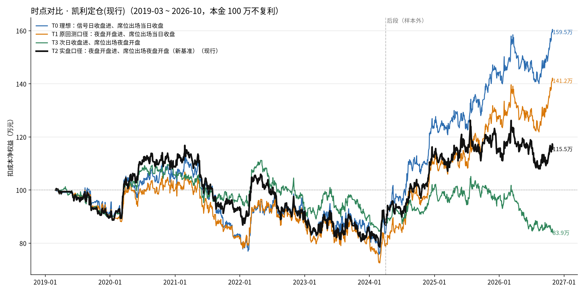
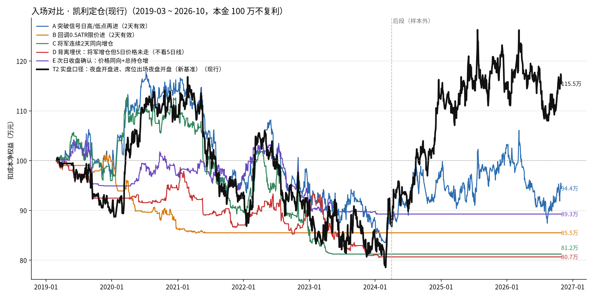
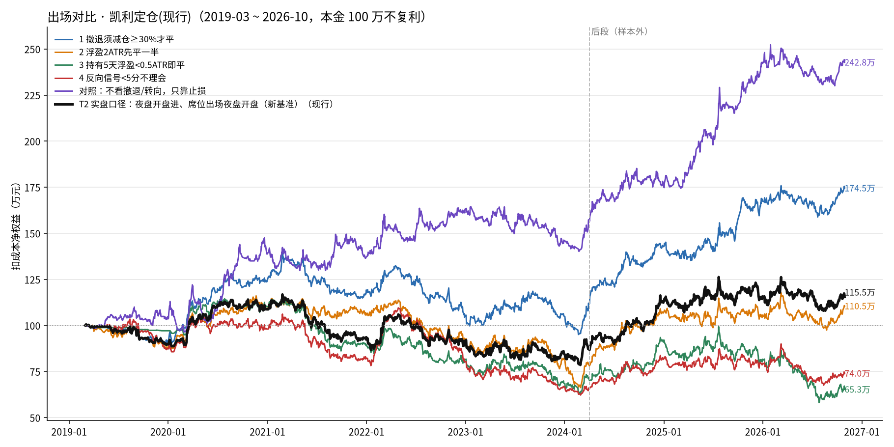

区间 2019-03-01 起，前段/后段分界 2024-04-01。本金 100 万，扣成本（每边 1 跳 + 万 0.5）。蓝色行 = 新基准（实盘口径）。“夜盘开盘”= 下一交易日开盘价（有夜盘的品种即 21:00）。



| 组 | 方案 | 笔数 | 撤单 | 胜率 | PF | 持有 | 净收益 | 年化 | 回撤 | 前段净 | 后段净 | 2019 | 2020 | 2021 | 2022 | 2023 | 2024 | 2025 | 2026 |
|---|---|---|---|---|---|---|---|---|---|---|---|---|---|---|---|---|---|---|---|
| 时点 | T0 理想：信号日收盘进、席位出场当日收盘 | 1311 | 0 | 54.1% | 1.21 | 2.4 | 576,043 | 6.2% | 33.2% | -133,488 | 709,531 | -8.7万 | 13.2万 | -21.1万 | 9.4万 | -5.9万 | 37.9万 | 19.1万 | 13.7万 |
| 时点 | T1 原回测口径：夜盘开盘进、席位出场当日收盘 | 1346 | 0 | 52.3% | 1.18 | 2.4 | 390,942 | 4.4% | 32.1% | -183,143 | 574,085 | -9.5万 | 9.4万 | -17.4万 | 7.5万 | -7.5万 | 28.7万 | 16.6万 | 11.4万 |
| 时点 | T2 实盘口径：夜盘开盘进、席位出场夜盘开盘（新基准） | 1184 | 0 | 51.9% | 1.12 | 2.4 | 142,801 | 1.8% | 32.8% | -92,229 | 235,030 | -10.2万 | 18.9万 | -15.0万 | -1.4万 | -6.4万 | 27.8万 | 2.9万 | -2.3万 |
| 时点 | T3 次日收盘进、席位出场夜盘开盘 | 1554 | 0 | 48.8% | 1.06 | 2.4 | -158,076 | -2.2% | 24.5% | -108,024 | -50,052 | -9.6万 | 15.2万 | -7.3万 | -4.5万 | -3.2万 | 9.9万 | -3.1万 | -13.3万 |
| 入场 | A 突破信号日高/低点再进（2天有效） | 1267 | 534 | 53.0% | 1.07 | 2.1 | -59,039 | -0.8% | 29.0% | -107,424 | 48,385 | -2.2万 | 16.0万 | -17.4万 | -1.4万 | -6.6万 | 9.3万 | 5.5万 | -9.1万 |
| 入场 | B 回调0.5ATR限价进（2天有效） | 160 | 272 | 43.8% | 0.64 | 3.0 | -145,032 | -2.0% | 15.6% | -145,032 | 0 | -0.1万 | -13.7万 | -0.7万 | 0.0万 | 0.0万 | 0.0万 | 0.0万 | 0.0万 |
| 入场 | C 将军连续2天同向增仓 | 346 | 0 | 49.7% | 0.92 | 3.1 | -187,727 | -2.7% | 27.9% | -187,727 | 0 | -4.0万 | 13.2万 | -19.2万 | -4.0万 | -4.8万 | 0.0万 | 0.0万 | 0.0万 |
| 入场 | D 背离埋伏：将军增仓但5日价格未走（不看5日线） | 209 | 0 | 49.3% | 0.74 | 4.7 | -193,368 | -2.8% | 19.5% | -193,368 | 0 | -7.5万 | 1.7万 | -7.1万 | 3.3万 | -9.3万 | -0.4万 | 0.0万 | 0.0万 |
| 入场 | E 次日收盘确认：价格同向+总持仓增 | 482 | 1294 | 47.7% | 0.96 | 1.9 | -107,349 | -1.5% | 14.6% | -107,349 | 0 | -5.1万 | 2.1万 | -0.9万 | -4.6万 | -1.8万 | -0.5万 | 0.0万 | 0.0万 |
| 出场 | 1 撤退须减仓≥30%才平 | 1054 | 0 | 52.7% | 1.26 | 2.9 | 733,716 | 7.5% | 33.1% | 64,702 | 669,014 | -8.6万 | 31.5万 | -5.4万 | -12.1万 | 0.4万 | 33.7万 | 27.4万 | 6.5万 |
| 出场 | 2 浮盈2ATR先平一半 | 1986 | 0 | 56.9% | 1.1 | 2.6 | 95,569 | 1.2% | 42.9% | -183,120 | 278,689 | -12.0万 | 20.7万 | -2.1万 | -13.6万 | -10.8万 | 25.6万 | -1.3万 | 3.1万 |
| 出场 | 3 持有5天浮盈<0.5ATR即平 | 1301 | 0 | 49.3% | 1.01 | 1.9 | -351,173 | -5.5% | 49.5% | -271,100 | -80,073 | -2.9万 | 13.1万 | -20.7万 | -8.2万 | -11.8万 | 22.5万 | -9.5万 | -17.7万 |
| 出场 | 4 反向信号<5分不理会 | 1527 | 0 | 52.5% | 1.02 | 2.5 | -277,115 | -4.2% | 43.2% | -336,239 | 59,124 | -12.6万 | 10.6万 | -14.5万 | -2.6万 | -14.2万 | 16.0万 | -2.8万 | -7.6万 |
| 出场 | 对照：不看撤退/转向，只靠止损 | 357 | 0 | 43.1% | 1.66 | 8.1 | 1,307,594 | 11.6% | 16.9% | 406,370 | 901,224 | 3.2万 | 36.5万 | -3.8万 | 17.2万 | -7.8万 | 30.2万 | 62.2万 | -6.8万 |